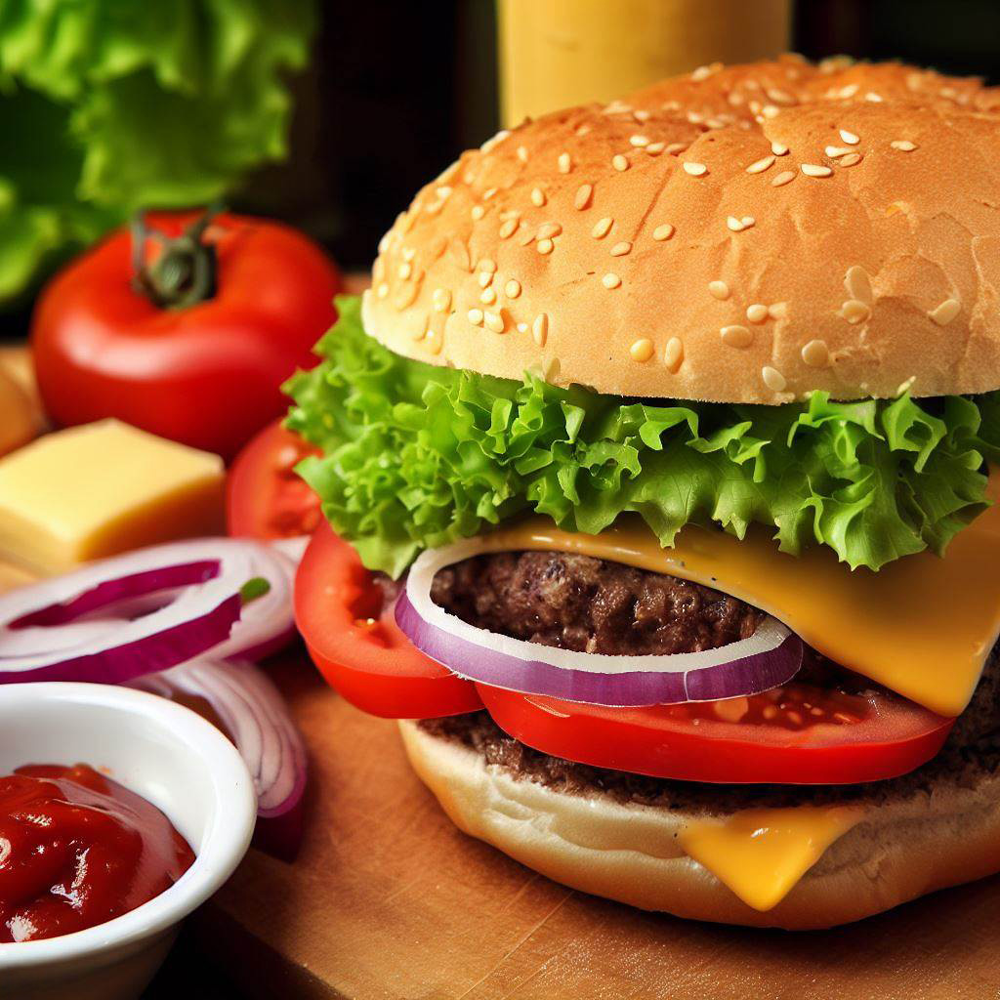

Burger

Description
A classic and delicious homemade burger recipe that's perfect for a quick and satisfying meal.
Ingredients
- Ground beef - 1/2 lb
- Burger buns - 2
- Lettuce leaves - 2
- Sliced tomatoes - 2
- Sliced onions - 1/2
- Sliced cheese - 2 slices
- Ketchup - 2 tbsp
- Mustard - 1 tbsp
- Mayonnaise - 1 tbsp
- Salt - 1/2 tsp
- Black pepper - 1/4 tsp
Steps
- Preheat your grill or stovetop pan.
- Divide the ground beef into two equal portions and form them into burger patties.
- Season the patties with salt and black pepper.
- Cook the patties on the grill or pan until they reach your desired level of doneness.
- While the patties are cooking, split the burger buns and lightly toast them on the grill or in a toaster.
- Spread ketchup, mustard, and mayonnaise on the inside of the bun halves.
- Place lettuce leaves, sliced tomatoes, and sliced onions on the bottom bun.
- Once the patties are cooked, place a slice of cheese on each patty to melt slightly.
- Put the cooked burger patties on top of the vegetables.
- Close the burger with the top bun.
- Enjoy your homemade burger!